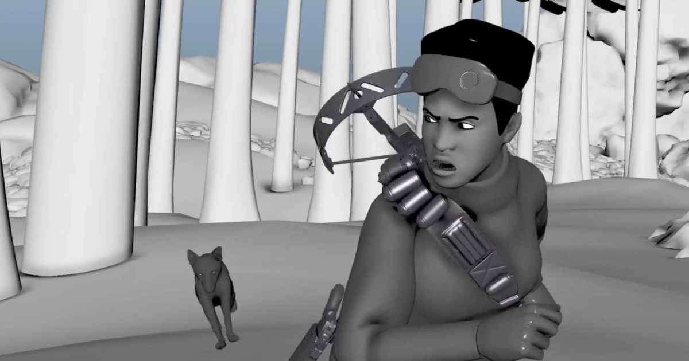

01
Maya MotionMaker：以路徑與關鍵位置生成雙足／四足動作
Maya 2026.1 的 MotionMaker 以生成式系統補足角色中間動作，並與 Bifrost 模組化 Rigging Framework 一起強化角色製作。

AI 動作 ★★★★★
完整分析
技術／流程變更
MotionMaker 可用角色起終位置或視窗中的導引路徑生成雙足與四足中間動作；同版 Bifrost 也加入模組化 Rigging Framework，可轉成 Maya 原生控制器與關節。
Production 影響
對角色動畫前期 blocking、快速驗證 locomotion 與重複 rig 組裝都有明確價值，尤其適合先產生可編輯基底，再由動畫師進行姿勢與節奏修正。
導入測試與限制
目前來源主要是功能介紹，生成動作品質、腳底鎖定、碰撞與風格化角色穩定度仍需用實際骨架測試；Bifrost rigging toolset 也有版本相容限制。
BRIEF｜來源已驗證；證據深度較有限，完整分析會明確區分已知資訊與待驗證事項。